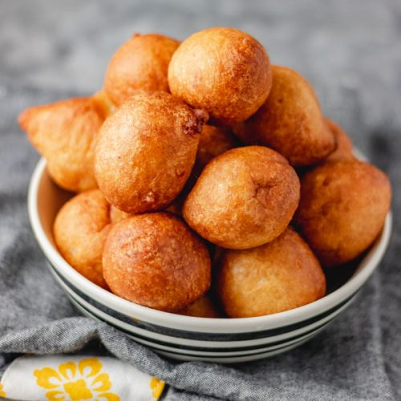

Puff puff recipe

Description
Puff-puff, as it is called in Nigeria, is a traditional African snack made
of fried dough. Puff-puffs are made of dough containing flour, yeast,
sugar, butter, salt and water, which is then deep fried in vegetable oil
to a golden brown color. After frying, puff puffs can be rolled in sugar.
Ingredients
- 200g of Flour
- 15g of Yeast
- 80g of sugar
- A pinch of salt
- Warm water
- Vegetable oil
Steps
-
Mix salt, water, sugar, and yeast in a bowl. Set it aside for 5 minutes
- Add flour and mix with a wooden spoon
-
Cover the mixture and set it aside to rise for approximately 1-2 hours
-
Into a large saucepan, Pour in the vegetable oil and heat (low heat).
-
When the oil is hot enough, use a spoon or spatula to dish up the batter
and drop it in the oil. In a ball shape.
Home page